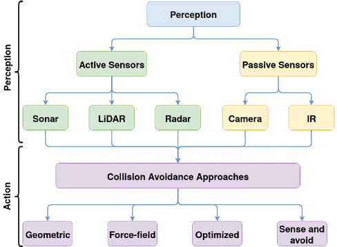

<!DOCTYPE html>

<html>

  <head>
  


  </head>

  </html>
  <h1><b>ENG0018 Computer Laboratory 2024/25</b></h1>
  <h2>Student URN: 6863437</h2>
    <hr>
    <h2 style="font-family:Times New Roman;"><b>Conference paper: Evaluation of Collision Avoidance Techniques in UAVs </b></h2>
      <hr>

    <!style for tables>
    <style>
      table {
          font-family: Times New Roman;
          border-collapse: collapse;
          width 30%; 

        }  

        td, th {
            border: 1px solid #dddddd; 
            text-align: left; 
            padding: 8px; 
        }

      tr:nth-child(even) {
         background-color: #dddddd;
      }
    
        </style>

    <style>
     p.ex1 {
       margin-left: 250px;
  }
    </style>
     </head>

  <meta name="viewport" content="width=device-width, initial-scale=1">
  <link rel="stylesheet" href="https://www.w3schools.com/w3css/4/w3.css">
  <style>
   .mySlides {display:none;}
  </style>
  <body style="backgroumd-color:#FFFFFF;margin-left:50px;">
  </style>


    <!table of contents>
    <table>

      <tr>
        <th><h3>Table of contents</h3></th>
      </tr>
      
      <tr>
        <td><a href="#Abstract">Abstract</td>
      </tr>
      
      <tr>
        <td><a href="#Introduction">Introduction</td>
      </tr>
      
      <tr>
        <td><a href="#Main Body">Main Body</td>
      </tr>
      <tr>
     <td><a href="#References">References</td>         
      </tr>
    </table>


  <hr>
    <h3>
      <h3 id="Abstract">Abstract</h3>
    <p class="ex1" >
      <pre>
      Over the past decade, demand for collision avoidance methods has surged due to the increasing use of Unmanned Aerial Vehicles (UAVs) in commercial 
    sectors (Canis, B., 2015). UAVs provide enhanced capabilities, boost productivity, reduce emissions, and minimise risks while sharing airspace, 
    benefiting the economy and society. This article offers a comparison and evaluation of UAV collision avoidance techniques, analysing their effectiveness 
    and the advantages and disadvantages observed by military and other groups. Ultimately, the Optimisation method proves to be the most efficient 
    collision avoidance technique for UAVs.
      </pre>
    </p>
<h3 id="Introduction">Introduction</h3>
      <P class="ex1">
        
        <pre>
      In recent years, unmanned aerial vehicles (UAVs) have several uses. UAVs, for example, are often used in disaster response, agriculture, 
    and cargo transportation, among other things. The number of UAV flying operations has dramatically expanded on a global scale. As of 
    October 1st 2024, 792,000 UAVs have been registered with the Federal Aviation Administration (Drones by the numbers).
    
      An unmanned aerial vehicle, commonly known as a drone, is an aircraft without a human pilot, crew, or passengers on board (Fuller M., 2021). According
    to the International Trade Administration (ITA), an unmanned aircraft system comprises air vehicles and associated equipment that do not carry a human 
    operator but instead are remotely piloted or fly autonomously (44, 2020). 
          
      Unmanned Aircraft Systems are composed of a UAV or drone, the person in charge of flight operations on the ground and the infrastructure linking 
    the two. Since it solely refers to the vehicle itself, the UAV refers to a part of the UAS. 
  
      The UAVs' anti-collision technologies are crucial to preserving their lifespan. Obstacle sensing, collision prediction, and collision avoidance make 
    up most UAV anti-collision technology techniques. By detecting its environment, a UAV can identify and find obstacles, supplying information that can 
    be used to anticipate collisions. The sensors in the UAV gather environmental data during detection, such as the position and speed of obstacles. The 
    UAV will determine whether it will collide with the obstacles during the collision prediction process. If the UAV predicts a collision, it will plan its 
    flight path to avoid it during the collision avoidance operation. 
 
    </pre>
    </p>
      
  <h3 id="Main Body">Main Body</h3>
<p class="ex1">
    <pre>
     Diverse collision avoidance systems are categorised to highlight key ideas. Figure 1 shows this classification in two main areas: perception and action. 
    The first phase of any collision avoidance system is perception, primarily obstacle detection. Sensors observe surroundings and identify obstructions. 
    Various sensors exist, classified as either active or passive, based on their functions.

                        
          *<I>FIGURE 1. Modules that are integrated into collision avoidance systems are divided into perception and action. Then, it is further divided into 
          avoidance approaches and perception. The aim of this figure is the collision avoidance approaches that will be expanded upon.*</I>
    
      There are four primary methods for avoiding collisions in autonomous vehicles: geometric, force-field, optimized, and sense and avoid. 
    Geometric avoidance uses the location and speed of drones to alter their paths, while force-field techniques control attractive and repulsive 
    forces around obstacles. Optimized methods rely on known obstacle parameters to enhance routing, and sense and avoid utilizes real-time 
    obstacle detection for avoidance decisions. 
      
      The collision avoidance system (CAS) of an autonomous vehicle ensures that it doesn't collide with either stationary or moving obstacles
    by using detection range and collision radius. 
      
      This article provides an overview of these collision avoidance techniques, assessing their effectiveness, efficiency, and cost.
      

  I. <u><b>Optimisation Method</b></u>
      In their 2022 study, Goss, Rajvanshi, and Subbarao (Goss, Rajvanshi and Subbarao, 2022)  present an analytical method aimed at mitigating collision 
    risks between aeroplanes by leveraging the geometric properties of flight trajectories. 
  
      This approach offers several benefits, including greater effectiveness, speed, and reliability compared to existing methods, as it evaluates real-time 
    factors such as speed, heading, weather, and obstacles. Minimising errors can also help drone manufacturers avoid costly legal disputes.
 
      However, the method requires advanced technical knowledge, which may challenge inexperienced users, and it could reduce human judgment in critical 
    decisions, potentially leading to mistakes. Additionally, it might falsely identify collision threats, causing unnecessary evasive measures that could hinder
    drone performance. 
      
      The authors emphasise the importance of integrating this technique with other methods to fully enhance its efficacy in reducing aerial drone accidents.
      

  II. <u><b>Force-field Method</b></u>
      The concept of force-field methods, which involve using attractive or repulsive forces, is crucial for drones to navigate effectively by avoiding obstacles 
    or moving toward targets. The technique enhances collision avoidance capabilities, is budget-friendly compared to other methods, and allows for better 
    range in detecting hazards. 
      
      However, it comes with notable drawbacks, including potential safety risks if the drone malfunctions, possible legal issues, reduced battery life, and decreased 
    accuracy in obstacle detection. Additionally, the technique struggles in urban settings where electromagnetic fields may disrupt its effectiveness.
      
      In summary, while the force-field approach can improve safety and navigation for drone operators, it may not always be reliable in complex environments.


  III. <u><b>Geometric Method</b></u>
      The geometric approach for drone collision avoidance involves creating a 3D map of the environment using sensors and applying geometric algorithms to 
    detect obstacles. By calculating velocities and distances, potential collisions can be predicted, allowing drones to adjust their paths or halt if necessary. 

      This method does not require heavy equipment, preserving the drone's weight and enhancing flight efficiency. However, its effectiveness is limited by the 
    narrow field of view, as it cannot detect obstructions outside the sensor range, particularly in difficult terrain or adverse weather conditions. 

      Overall, while the geometric technique offers a cost-effective solution for real-time obstacle detection, its limitations warrant careful consideration.

  
  III. <u><b>Sense and Avoid Method</b></u>
      Collision avoidance in drone swarms focuses on efficiently detecting and avoiding obstacles with minimal computational requirements. Each drone is responsible 
    for its path planning, which helps prevent collisions both among drones and with external obstacles without needing to know the intentions of other drones. 

      A notable application of this approach is the use of computer vision to identify animals, enhancing the safety and autonomy of drone navigation by enabling 
    them to navigate without manual control (Sharma, S.U. and Shah, D.J. 2016). 

      However, the technology currently has limitations in range and accuracy, which may affect its effectiveness in certain scenarios.

  IV. <u><b>Conclusion</b></u>
      Collision avoidance techniques vary in assessment measures based on anticipated uses and platform constraints. Each method has distinct advantages and 
    disadvantages, influencing its overall usability. After analysing the information by their efficiency in different terrains, it is evident that the most effective 
    collision avoidance technique is the optimisation method due to its high efficiency, practicality and monetary value.

    </pre>
</p>

    
 <h3 id="References">References</h3>
      <p>
        <pre>
44 (2020). Unmanned Aircraft Systems. [online] International Trade Administration | Trade.gov. [Accessed 28 Nov. 2024]
          <a href="https://www.trade.gov/unmanned-aircraft-systems#?anchor=content-node-t14-field-lp-region-2-1" target = "_blank">Trade.gov</a>

Canis, B. (2015) Unmanned Aircraft Systems (UAS): Commercial Outlook for a New Industry. [Accessed: 09 October 2024]
          <a href="https://goodtimesweb.org/industrial-policy/2015/R44192.pdf" target = "_blank">Article available here</a>

Drones by the Numbers (as of 10/1/24) (no date) | Federal Aviation Administration. [Accessed: 11 October 2024]
          <a href="https://www.faa.gov/node/54496" target = "_blank">Webpage available here</a>

Fuller, M. (2021) Unmanned Aircraft Systems (UAS), Unmanned Aircraft Systems (UAS) | Federal Aviation Administration. [Accessed: 11 October 2024]
          <a href="https://www.faa.gov/uas" target = "_blank">Webpage available here</a>

Goss, J., Rajvanshi, R. and Subbarao, K. (2022). Aircraft Conflict Detection and Resolution Using Mixed Geometric and Collision Cone 
Approaches | Guidance, Navigation, and Control and Co-located Conferences. Guidance, Navigation, and Control and Co-located Conferences. 
[online] [Accessed 28 Nov. 2024]
          <a href="https://arc.aiaa.org/doi/abs/10.2514/6.2004-4879" target = "_blank">Webpage available here</a>

Purcell, D.W., Huissoon, J.P. (1995). Curved Array Imaging for Navigation in an Unknown Environment. In: Jones, J.P. (eds) Acoustical Imaging. 
Acoustical Imaging, vol 21. Springer, Boston, MA. [Accessed: 11 October 2024]
          <a href="https://link.springer.com/chapter/10.1007/978-1-4615-1943-0_22" target = "_blank">Webpage available here</a>

Sharma, S.U. and Shah, D.J. (2016). A Practical Animal Detection and Collision Avoidance System Using Computer Vision Technique. 
[online] Ieee.org.[Accessed 28 Nov. 2024]
          <a href="https://ieeexplore.ieee.org/stamp/stamp.jsp?arnumber=7792584" target = "_blank">Webpage available here</a>
          
        </pre>
      </p>
      
<p id="date&time"></p>
<script>
//Javascript to display the date and time on my webpage
const d = new Date();
document.getElementById("date&time").innerHTML=d;
</script>
  
      <!DOCTYPE html>
<html>
<head>
    <title>Change Button Colour</title>
    <script type="text/javascript">

        //Get a reference to the button element
        window.onload = function() {
            var button = document.getElementById("colorButton");

            //Function to change the button colour
            function changeColor() {
                //Generate a random colour (hexadecimal)
                var randomColor = "#" + Math.floor(Math.random() * 16777215).toString(16);

                //Set the button's background colour to the random colour
                button.style.backgroundColor = randomColor;
            }

            //Add a click event listener to the button
            button.addEventListener("click", changeColor);
        };
    </script>
</head>
<body>
    <button id="colorButton">Click me to change colour</button>

  
</body>
</html>
